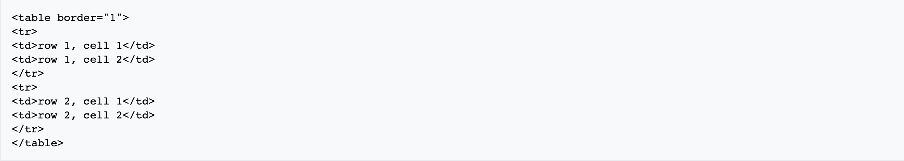
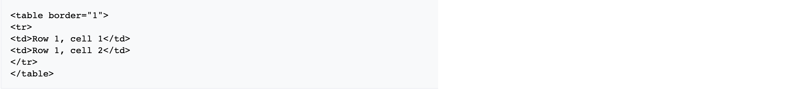
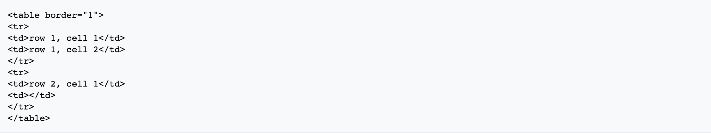
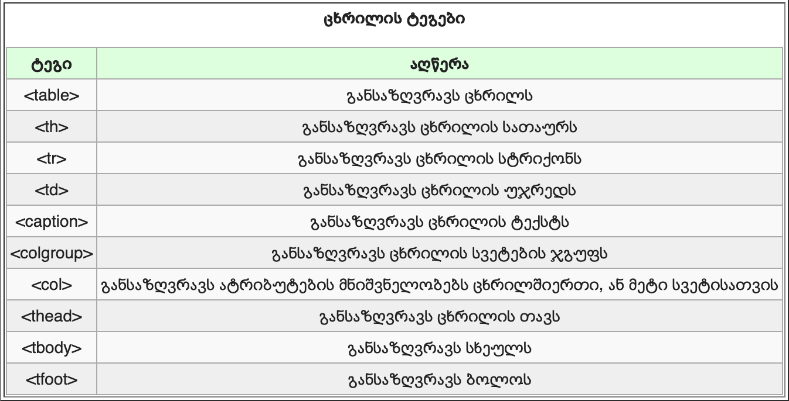

ცხრილები განისაზღვრებიან table ტეგით. ცხრილები დაყოფილია სტრიქონებად (tr ტეგით) და თითოეული სტრიქონი დაყოფილია სვეტებად (td ტეგით). Td ნიშნავს table data(ცხრილის მონაცემები), რომელიც არის ინფორმაცია უჯრედზე. უჯრედის ინფორმაცია შეიძლება შეიცავდეს ტექსტს, ცხრილებს, სურათებს, პარაგრაფებს, ფორმებს, ჰორიზონტალურ ხაზებს, ცხრილებს და ა.შ.
თუ არ განსაზღვრავთ საზღვრის ატრიბუტს, ცხრილი გამოისახება საზღვრების გარეშე. ზოგჯერ ეს გამოყენებადია, მაგრამ უმეტეს შემთხვევაში საჭიროა საზღვრები. იმისათვის რომ ცხრილი გამოისახოს საზღვრებით, უნდა გამოიყენოთ საზღვრის ატრიბუტები:
სათაურები ცხრილებში განსაზღვრულნი არიან
ცხრილებში არსებული ცარიელი უჯრები ზოგიერთ ბრაუზერში ცუდად გამოისახებიან.
ცხრილის ტეგები
